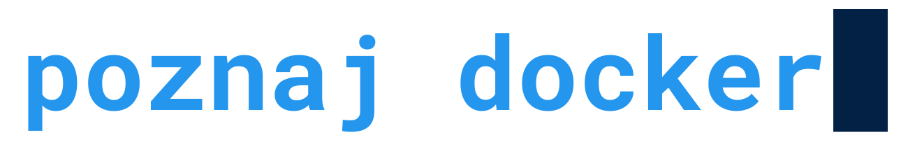

Tata, mąż, blogger, programista, podcaster i pasjonat.
Założyciel i jeden z organizatorów devWarsztatów.
Z
Kubernetes związany zawodowo i prywatnie. Uwielbia bawić
się nowościami, poznawać nowe języki i biblioteki, chodzić
na konferencje, poznawać nowych ludzi, pomagać innym.
Microsoft MVP w kategorii Developer Technologies.
